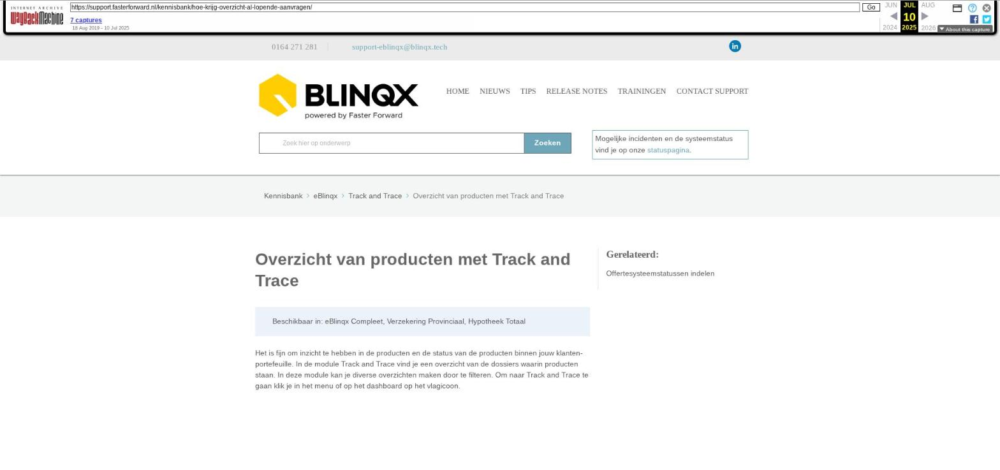

Overzicht van producten met Track and Trace

Tekstinhoud
Overzicht van producten met Track and Trace
Beschikbaar in: eBlinqx Compleet, Verzekering Provinciaal, Hypotheek Totaal
Het is fijn om inzicht te hebben in de producten en de status van de producten binnen jouw klantenportefeuille. In de module Track and Trace vind je een overzicht van de dossiers waarin producten staan. In deze module kan je diverse overzichten maken door te filteren. Om naar Track and Trace te gaan klik je in het menu of op het dashboard op het vlagicoon.
Filteren
Links heb je diverse filtermogelijkheden. Wil je bijvoorbeeld weten hoeveel diensten je hebt lopen, selecteer dan in de kolom "Offerte", het type "Dienst" waarna je vervolgens op "Zoeken" klikt. eBlinqx toont dan alle lopende producten en die in eigen beheer zijn van het type "Dienst".
Je kan hier zien wat de status is van de gefilterde producten. Het is mogelijk om te filteren op één specifieke status of op bijvoorbeeld een groepstatus.
Exporteren naar Excel en afdrukken
Alle resultaten van de Track and Trace module kunnen worden geëxporteerd naar Excel. Je klikt dan op de "Excel"-button en vervolgens kan je binnen Excel de data bewerken met alle opties die Excel jou biedt. Daarnaast is het mogelijk om de resultaten af te drukken/om te zetten naar een pdf bestand. Dit door middel van knop 'afdrukken'.
De module biedt meerdere manieren van filteren aan. Je kunt op deze manier verschillende zaken inzichtelijk maken die je kunt gebruiken voor jouw eigen statistieken.
Laatste update: 15 juli 2024
Tagged: overzicht
Was deze informatie nuttig?
Ja Nee